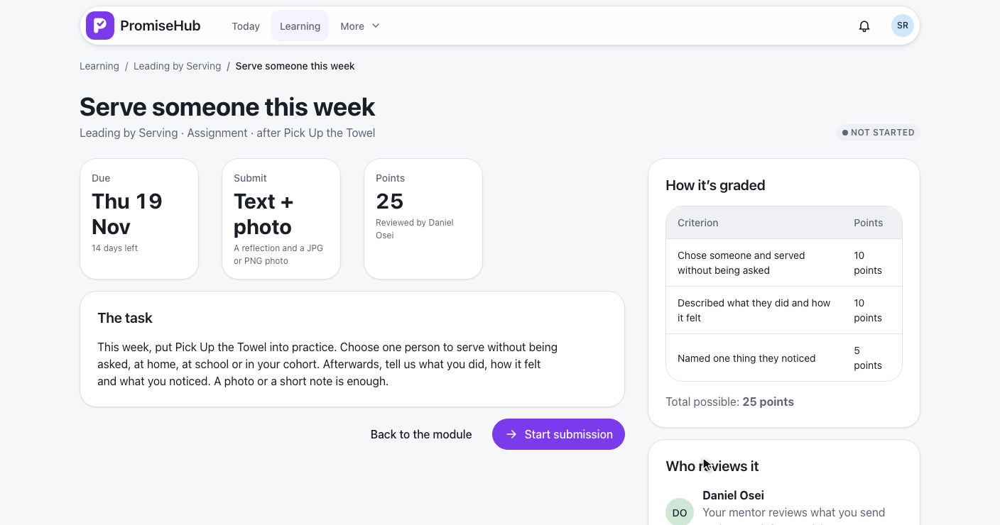
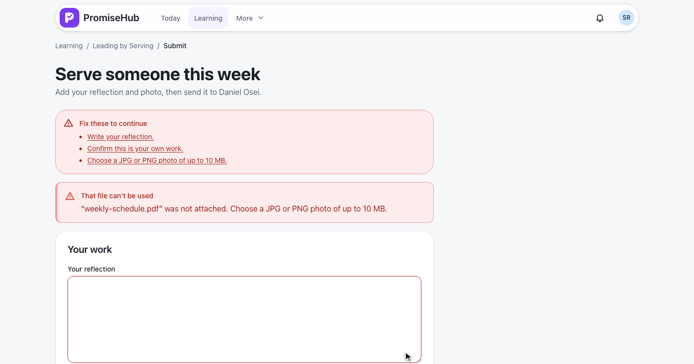
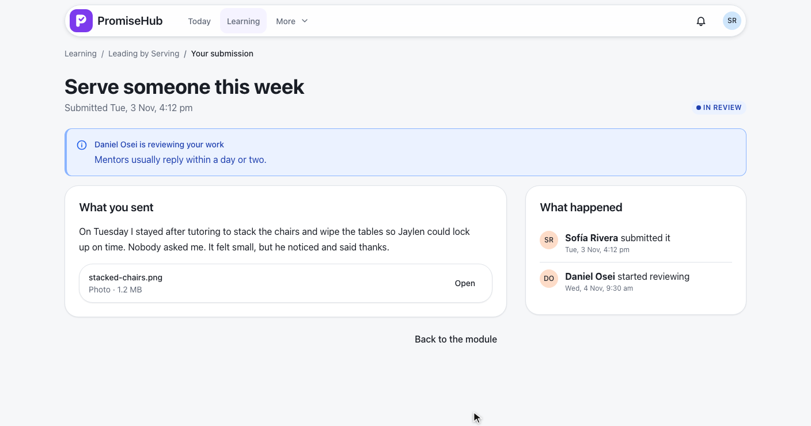
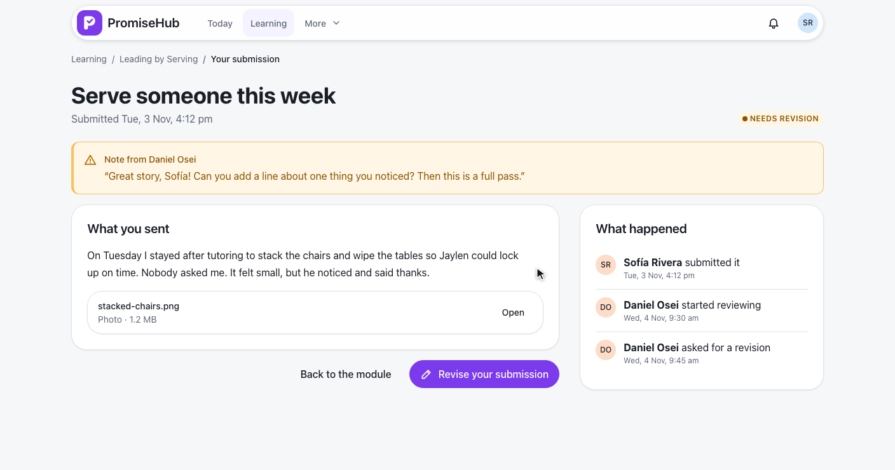
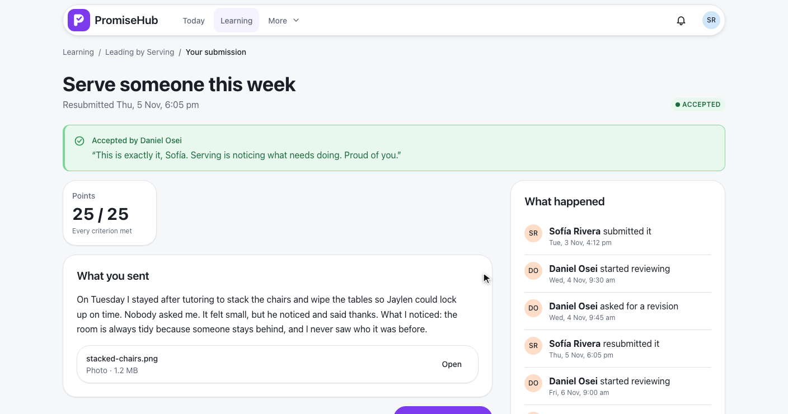
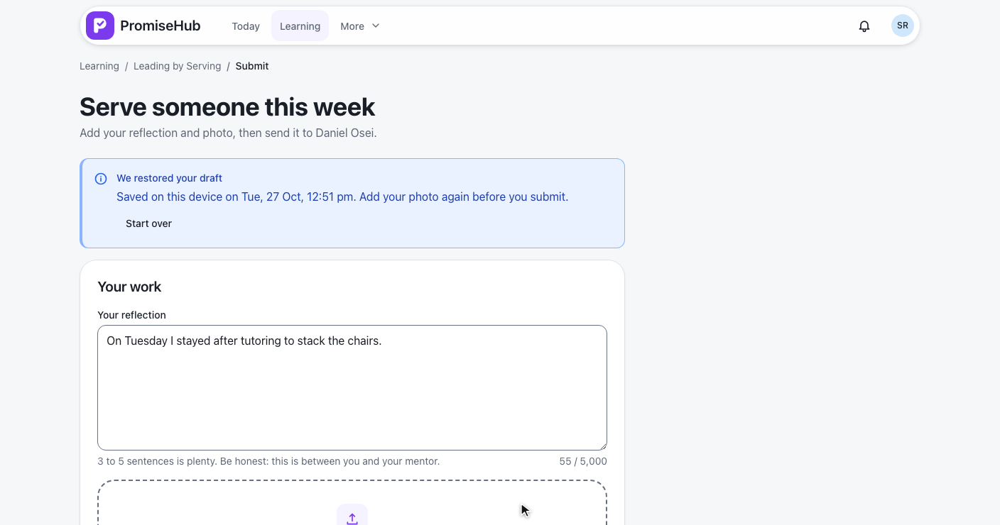

PromiseHub · Video 62
Submit assignments
The brief, sending a reflection and a photo, following it through review, and revising when asked
The brief, sending a reflection and a photo, following it through review, and revising when asked

GET /learning/assignments/{id}: task, ways to submit, rubric and totalPOST /learning/assignments/{id}/submission sends work and file in one requestlockedFrom the module, the brief, a reflection, a photo, the promise, the dialog and Submitted.
| Check | Refused with |
|---|---|
| Photo: JPG or PNG; file: PDF, JPG or PNG; up to 10 MB; name, type and first bytes agree | 422 file |
| Reflection up to 5,000; a full http or https link | 422 |
| The promise and some work | 422 attest, text |
| A second submission | 409 submitted |
| Resubmitting work not sent back | 409 not-revisable |
| Past due and grace, no late work | 409 closed |




His note, her last reflection, the photo kept, Resubmit, and later Accepted.
Leave without submitting?, Save draft and leave, Continue your draft, restored.

unsavedChangesGuard opens unsaved-changesbeforeunload while there are unsent changesDRAFT_STORE: promisehub.draft.{membership}.{assignment}The brief, the form and Submitted in one column.
Invalid, a refused file, in review, late, closed, locked, not found, Try again, Learning off.
LearningAssignmentBriefTests: the brief, locks, due rules, roles, tenancy, Learning offLearningAssignmentSubmitTests: submitting with a file and every refusalLearningSubmissionStatusTests: review states, revising and resubmittinge2e/tests/learning/submissions.spec.ts on phone and laptop, drafts included, with axe
Next: mentors grade and assess